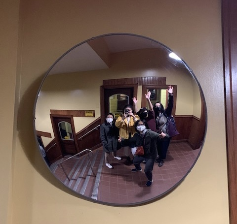
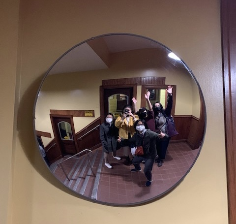

Hi there, I’m Phyllis.
A sophomore studying Information
Systems at Carnegie Mellon University,
I’m curious about how to design
effortless, accessible products with bold
personalities. Join me as I dive in — oh,
and wade through some code.
Work


TL;DR
Term project for Fundamentals of Programming and Computer Science
Pamela’s Diner
Web Development Project for Information Systems Milieux
Big Straw Magazine
Article layouts designed for Big Straw Magazine
NineToFive
High fidelity wireframes for Information Systems Milieux
About
My life in Pittsburgh, PA
 



Look closer — there’s a cat :)
How I got here
Born in Tallahassee, Florida, and raised in Dayton, Ohio, I grew up
reading and writing with my head in the clouds. But while there
was much magic to be found in books, I quickly became engaged
with the magic in the world around me. As a layout designer for
my school’s magazine, I learned how the confluence of typography,
color, and structure could breathe life to an idea. As a student
journalist, I learned how to amplify others' voices through my writing,
while also elevating my own.
My foray into technology started with good ol’ AP Computer Science
Principles. Being a writer and a designer opened up many pathways
for me to make a difference; in this course, I caught a glimpse of
sprawling new pathways — doors opening into places where technology,
design, and advocacy intersected. This led me to my major, Information
Systems, which represents the kind of human-centric, forward-thinking
work I’ve always wanted to pursue.
What I’m up to now
Currently, I’m a layout designer and writer for Carnegie Mellon’s
sole Asian-focused publication, Big Straw Magazine, as well as a
member of Women in IS. This summer, I’m busy with my client project
at re:Bloom, app development for the delivery startup Nile, brushing
up on some algorithms / data structures — and, of course, slogging
through my never-ending reading list.
Speaking of books, I just finished A Tale for the Time Being by
Ruth Ozeki! As for TV, I’ve been watching Moon Knight from the
Marvel Universe — I have a soft spot for Egyptian mythology.
Some favorite things
Woodwick candles; boba and chai tea; visiting cat cafes; fluffy blankets; every pasta imaginable; spicy salmon rolls; cute brunch places; sunsets after storms; turning off the alarm; antics with friends; Song of Achilles by Madeline Miller.